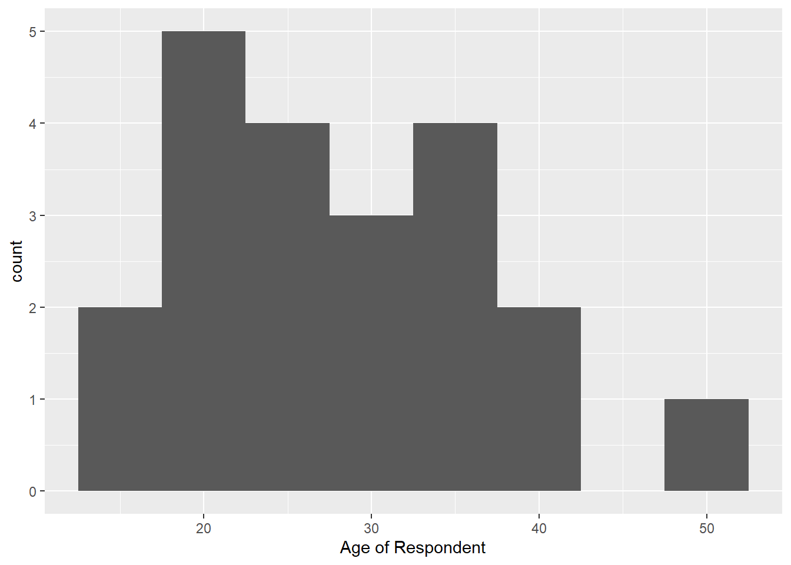
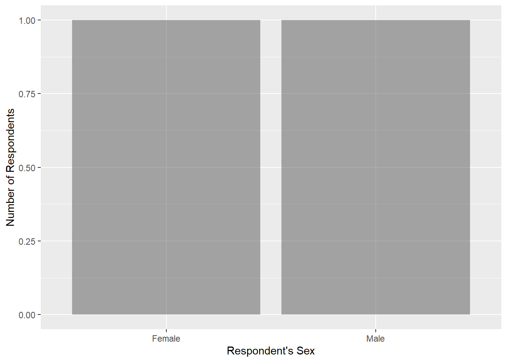

library(tidyverse)
library(here)Lab 3: Hip Hop Lyrics
This data set sampled 168 subjects to determine their overall familiarity with common terms in African American English. It collects data on each participant’s demographics, for instance their sex, age, ethnicity, nationality, and more. In addition, the participants are surveyed on how well they know African American English terms, which is a score rated from 1-5. Information is also gathered on what type of music they listen to, how familiar they are with white and black pop culture, and what artists they listen to.
The rows of this data set are one word that a participant is tested on the familiarity of.
These missing variables were replaced with zeroes and mean values. One drawback of this is that 0 is a valid value for multiple variables in the data set, so it might be difficult to tell which zeroes are legitimate and which zeroes are not. However, a benefit would be that the zeroes do not interfere with the calculation of summary statistics for each variable. Mean values were reported specifically for the number of strong ties people had to African Americans. One drawback to coding missing values in this way is that it does not entirely make sense, as “number of ties” is something that should be expressed as a whole number (you cannot have half a tie!). On the other hand, similar to using zeroes, a benefit for mean values is that they also do not interfere with the calculation of summary statistics.
hiphop_clean <- hiphop |> mutate( sex = as.factor(sex), across(c('jayz1', 'boondocks', 'fam1'), as.logical))There are 64 different words in this data set.
hiphop_clean |> distinct(word) |> nrow()[1] 64hiphop_clean <- hiphop_clean |> mutate( ethnic_updated = as.factor(if_else(ethnic == 'white', 'white', 'non-white')) )hiphop_clean <- hiphop_clean |> select(sex, age, ethnic_updated) |> distinct(sex, age, ethnic_updated) |> summary() hiphop_cleansex age ethnic_updated Female:21 Min. :16.00 non-white:13 Male :18 1st Qu.:18.50 white :26 Median :21.00 Mean :24.41 3rd Qu.:29.00 Max. :48.00Out of all the participants, it appears that there are 28 women and 19 men in the study. They have an average age of about 23 years.
hiphop |> distinct(age, keep.all = TRUE) |> ggplot(mapping = aes(x = age)) + geom_histogram(binwidth = 5) + labs(x = 'Age of Respondent')
hiphop |> distinct(sex, keep.all = TRUE) |> ggplot(mapping = aes(x = sex)) + geom_bar(stat = 'count', alpha = 0.5) + labs(x = "Respondent's Sex", y = "Number of Respondents")
Familiar Words
less_than_20 <- hiphop |>
filter(age < 20) |>
select(word, familiarity) |>
group_by(word) |>
summarize(familiarity = mean(familiarity))
less_than_20 |>
slice_min(familiarity)# A tibble: 1 × 2
word familiarity
<chr> <dbl>
1 catch the vapors 1.03less_than_20 |>
slice_max(familiarity)# A tibble: 1 × 2
word familiarity
<chr> <dbl>
1 off the hook 4.42non_white_females <- hiphop |>
filter(sex == "Female",
ethnic != "white") |>
select(word, familiarity) |>
group_by(word) |>
summarize(familiarity = mean(familiarity))
non_white_females |>
slice_min(familiarity)# A tibble: 4 × 2
word familiarity
<chr> <dbl>
1 break someone out 1
2 dukey rope 1
3 plex 1
4 rollie 1non_white_females |>
slice_max(familiarity)# A tibble: 1 × 2
word familiarity
<chr> <dbl>
1 feel me 4.19white_men_over_30 <- hiphop |>
filter(sex == "Male",
ethnic == "white",
age > 30) |>
select(word, familiarity) |>
group_by(word) |>
summarize(familiarity = mean(familiarity))
white_men_over_30 |>
slice_min(familiarity)# A tibble: 25 × 2
word familiarity
<chr> <dbl>
1 ay yo trip 1
2 beezy 1
3 break someone out 1
4 catch the vapors 1
5 crossroads 1
6 crump 1
7 dap 1
8 dollar cab 1
9 domino 1
10 duckets 1
# … with 15 more rowswhite_men_over_30 |>
slice_max(familiarity)# A tibble: 1 × 2
word familiarity
<chr> <dbl>
1 May-00 4.2Study Subjects
hiphop |>
filter(city %in% (10000:60000),
age %in% (17:23),
sex == "Male",
bieber == 5) |>
select(subj) |>
distinct(subj)# A tibble: 1 × 1
subj
<chr>
1 p17